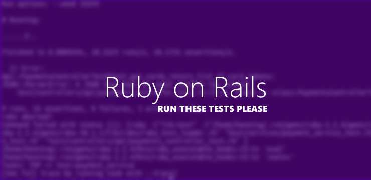

Rails的Unit Test
一、缘起Rails
想起6年前第一次认识37signals，时间飞快，绕了一圈，最后Rails又回来了。
使用Rails搭建的某互联网金融项目后台至今运行了快半年了，踩了很多坑，一直没有完整地梳理单元测试。 一则是因为业务还不算复杂，参与的人员也不多，加上xuan的逻辑很严谨，基本上不会有什么问题。 所以没有UT也没有什么，但原则上说，写好单元测试真的会让人放心很多，所以我写的部分基本上都会写点ut方便自测。 另外，项目基本上也没有自动化测试，所以只要让单元测试承担更多的责任了。
二、Rails的Unit Test
Rails作为框架，最大的特点就是全面。基本上这是一个非常好的脚手架，帮程序员做了很多事情。 这对于新手而言好处是快速上手搭建项目，坏处是对框架的组织不够理解，踩了坑基本要靠社区和Google。 当然，可能比较适合需要小步快跑的项目，边干边学，以赛代练。下面是UT的基本配置：
- 1.Test DB
- 2.Fixtures/YAML
- 3.Rake Prepare
需要一个测试db，在config/database.yml配置。
对于每个Model都对应一个yml，可以写上mock的数据。 值得注意的是该文件的文件名（包括目录，rails会用‘_’拼接，这一点不管是erb到method的映射还是其他都一样，rails的约定）就是table的名称。
测试之前不要忘记update下数据库的结构，如果修改了table的column或者其他，注意和yml文件对应，然后要运行 rake db:test:load和rake db:test:prepare. BTW，使用IDE如Rubymine可以让生活更轻松。
Rails Test教程我看了几遍感觉很乏力，只好按照自己java的路子来写。 然后Functional Test和Integration Test基本上就是postman和ut以及手工测试来解决，等慢慢再熟悉一点rails再考虑更多的自动化测试吧。
Authors and Contributors
Qiqidone (@qiqidone) can be founded GitHub.